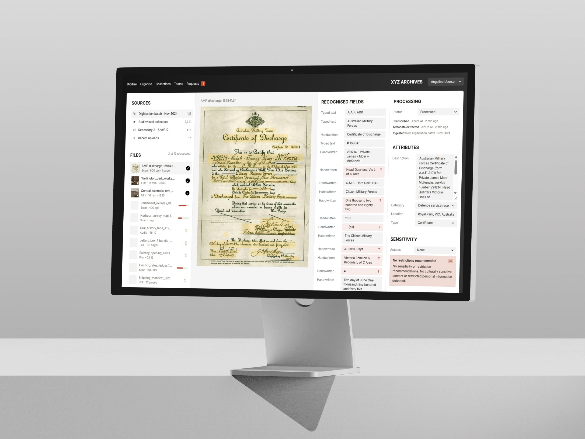
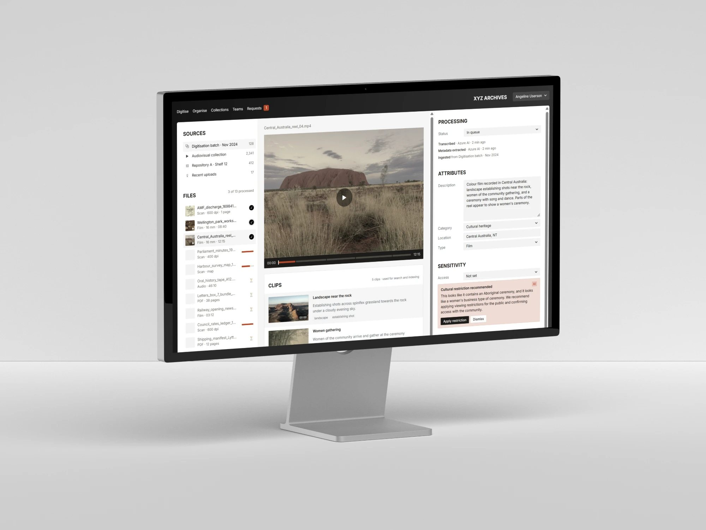

AI metadata and transcription automation
The problem
Digitising historical documents, photos and videos takes time. Scanning is only the first step: every item then needs manual effort to transcribe it and label it correctly, so that it can be found in search.
Until that work is done, a digitised record is still invisible: it sits in the archive with nothing to search by.
The solution
A batch digitise–transcribe–label–review web app that processes multimodal content together: scanned documents, photos and films go through the same flow.
Azure AI transcribes typed and handwritten text, breaks films into described clips, and suggests metadata and access restrictions. Archivists review and correct the results, and the content becomes accessible for search, indexing and retrieval.
My role
UX Lead: handled ideation and prototyping in close collaboration with the tech/AI stream.
AI-driven transcription, metadata automation and document management workflow PoC prototyped and implemented.
Technology
Web app + Azure AI


Stakeholder reviews
Daria is very thoughtful in the way she works and puts things together. This is seen in how she asks questions and answers ones that the client asks. I enjoy seeing how Daria works with the team and answering the question behind the question. […] She understand[s] the requirements and brief really well, takes the time to digest it, and then comes up with very thoughtful solutions. She is able to give instructions well to the younger ones in the team.